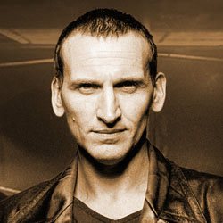

|  |
The ninth Doctor was portrayed by Christopher Eccleston. The production team's approach to the character and Eccleston's portrayal were highlighted as being intentionally different from his predecessors, with Eccleston stating that his character would be less eccentric. To fit in with a 21st century audience, the Doctor was given a primary companion who was designed to be as independent and courageous as himself in the form of Rose Tyler. He also briefly travels with Adam Mitchell, a self-serving boy genius who acts as a foil to the companions and ultimately proves unworthy, and Jack Harkness, a reformed con-man. The Doctor, Rose, and Jack form a close team but are separated in the series finale in which each character has to make difficult choices and face sacrifice. |